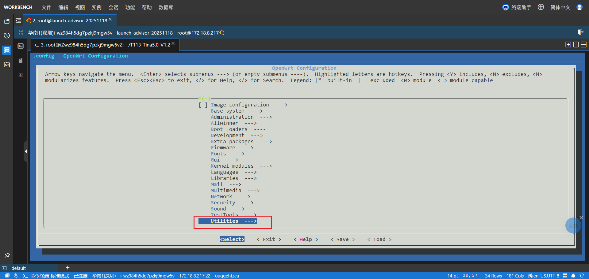
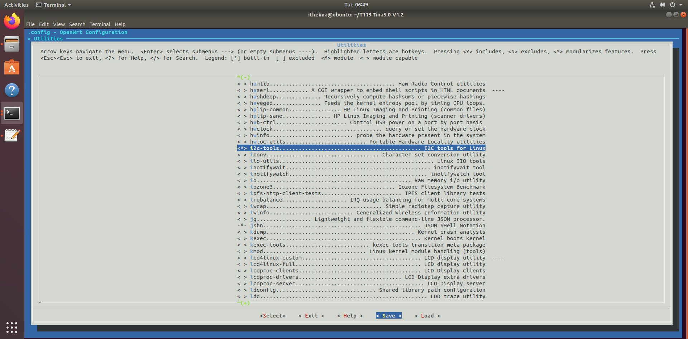

<!DOCTYPE lake>
<p data-lake-id="u86c74f62" id="u86c74f62"><span class="lake-fontsize-12" data-lake-id="uac13a01b" id="uac13a01b">​</span><br/></p><p data-lake-id="ud1b73db7" id="ud1b73db7"><span class="lake-fontsize-12" data-lake-id="u74c062c3" id="u74c062c3">你知道 IIC 最牛 X 的地方在哪吗？在于</span><strong><span class="lake-fontsize-12" data-lake-id="u6d76fc18" id="u6d76fc18">这两个模块可以同时挂在同样的两根线上</span></strong><span class="lake-fontsize-12" data-lake-id="uf0e5a402" id="uf0e5a402">！如果我们在课堂上让学生把陀螺仪和屏幕并联在一起，一搜搜出两个地址，这绝对是极其震撼的教学设计。</span></p><p data-lake-id="uc5d885af" id="uc5d885af"><span class="lake-fontsize-12" data-lake-id="u008ced87" id="u008ced87">为了配合这种极简但充满魔力的视觉体验，这节课的课件插画我们将采用</span><strong><span class="lake-fontsize-12" data-lake-id="u85308b14" id="u85308b14">纯白底色，画一条主干道（总线），上面像挂糖葫芦一样挂着屏幕和传感器</span></strong><span class="lake-fontsize-12" data-lake-id="ua1c528a7" id="ua1c528a7">的风格。</span></p><p data-lake-id="ud652cb6e" id="ud652cb6e"><span class="lake-fontsize-12" data-lake-id="u03d0163c" id="u03d0163c">以下为你精心融合了“姿态感知”与“屏幕点亮”双重魔法的 </span><strong><span class="lake-fontsize-12" data-lake-id="u445efeb9" id="u445efeb9">Day 6：感知与表达（IIC 子系统双核实战）</span></strong><span class="lake-fontsize-12" data-lake-id="u86eb63f9" id="u86eb63f9">：</span></p><hr/><h3 data-lake-id="5175963d" id="5175963d"><span data-lake-id="u934fbe86" id="u934fbe86">☀️</span><span data-lake-id="u7e2fbd89" id="u7e2fbd89"> 上午：见证双重魔法（免写 C 代码，玩转感知与输出）</span></h3><p data-lake-id="uc23117c5" id="uc23117c5"><strong><span class="lake-fontsize-12" data-lake-id="u2699d5e2" id="u2699d5e2">第 1 节课：机器人的五官与“串糖葫芦”接线法</span></strong></p><ul list="u6384decd"><li data-lake-id="ue7b507fa" fid="u334a301b" id="ue7b507fa"><strong><span class="lake-fontsize-12" data-lake-id="u0626898c" id="u0626898c">痛点引入：</span></strong><span class="lake-fontsize-12" data-lake-id="u0462d83c" id="u0462d83c"> 昨天接一个串口用了 3 根线。如果我们要给机器人装上平衡感（陀螺仪），再装上一张脸（OLED屏幕），是不是要把引脚插满？</span></li><li data-lake-id="u826eaecd" fid="u334a301b" id="u826eaecd"><strong><span class="lake-fontsize-12" data-lake-id="uce4b4e44" id="uce4b4e44">降维概念：</span></strong><span class="lake-fontsize-12" data-lake-id="uf148a22d" id="uf148a22d"> 欢迎来到 IIC（I2C）的魔法世界！它只需要 </span><strong><span class="lake-fontsize-12" data-lake-id="u73492cd0" id="u73492cd0">2根线</span></strong><span class="lake-fontsize-12" data-lake-id="u2c70369d" id="u2c70369d">（SCL 节拍器，SDA 快递员），就能像串糖葫芦一样，把几十个设备全挂在上面。</span></li><li data-lake-id="u257d8b5d" fid="u334a301b" id="u257d8b5d"><strong><span class="lake-fontsize-12" data-lake-id="uddc3a89b" id="uddc3a89b">终极物理连线：</span></strong><span class="lake-fontsize-12" data-lake-id="u3bb5387d" id="u3bb5387d"> 拿出 0.96寸 OLED 屏幕 和 MPU6050 陀螺仪。让学生把这两个模块的 SCL 全部接在板子的 PE0 上，SDA 全部接在 PE1 上（电源和地也并联）。</span></li></ul><p data-lake-id="ufe77e826" id="ufe77e826"><strong><span class="lake-fontsize-12" data-lake-id="u68769649" id="u68769649">第 2 节课：在茫茫人海中找到你（</span></strong><code data-lake-id="uc4907a48" id="uc4907a48"><strong><span class="lake-fontsize-12" data-lake-id="u0aecb774" id="u0aecb774">i2cdetect</span></strong></code><strong><span class="lake-fontsize-12" data-lake-id="ua8ed4b0f" id="ua8ed4b0f"> 点名神器）</span></strong></p><ul list="u8c9aa4d0"><li data-lake-id="ucf33b026" fid="u409f94dd" id="ucf33b026"><strong><span class="lake-fontsize-12" data-lake-id="u9163c666" id="u9163c666">动作：</span></strong><span class="lake-fontsize-12" data-lake-id="u3e0b0a68" id="u3e0b0a68"> 接好了，没写代码，系统认识这俩兄弟吗？</span></li><li data-lake-id="u8f421fd2" fid="u409f94dd" id="u8f421fd2"><strong><span class="lake-fontsize-12" data-lake-id="uec396453" id="uec396453">探雷神技：</span></strong><span class="lake-fontsize-12" data-lake-id="ufe263ff5" id="ufe263ff5"> 敲下系统自带的探测神仙命令：</span><code data-lake-id="u88dd0f7a" id="u88dd0f7a"><span class="lake-fontsize-12" data-lake-id="u8dc94c25" id="u8dc94c25">i2cdetect -y 1</span></code><span class="lake-fontsize-12" data-lake-id="u2d0aa959" id="u2d0aa959">（扫描 IIC 第 1 号总线）。</span></li><li data-lake-id="ua3f28b16" fid="u409f94dd" id="ua3f28b16"><strong><span class="lake-fontsize-12" data-lake-id="u4be088be" id="u4be088be">高潮时刻：</span></strong><span class="lake-fontsize-12" data-lake-id="ua69e7ea7" id="ua69e7ea7"> 屏幕上刷出一个扫雷一样的网格。在里面，赫然跳出了</span><strong><span class="lake-fontsize-12" data-lake-id="u4c2aa3fe" id="u4c2aa3fe">两个</span></strong><span class="lake-fontsize-12" data-lake-id="u094bdbf2" id="u094bdbf2">数字：</span><code data-lake-id="udab8dbe6" id="udab8dbe6"><strong><span class="lake-fontsize-12" data-lake-id="u1cae8eb8" id="u1cae8eb8">3c</span></strong></code><strong><span class="lake-fontsize-12" data-lake-id="ub90cb128" id="ub90cb128"> 和 </span></strong><code data-lake-id="ubf376fe8" id="ubf376fe8"><strong><span class="lake-fontsize-12" data-lake-id="ub257e3a2" id="ub257e3a2">68</span></strong></code><span class="lake-fontsize-12" data-lake-id="uea27e416" id="uea27e416">！</span></li></ul><p data-lake-id="u13a9ef98" id="u13a9ef98"><span class="lake-fontsize-12" data-lake-id="uc56c23bd" id="uc56c23bd">Plaintext</span></p><span class="yuque-card-unsupported">[codeblock]</span><ul list="u0bb34887"><li data-lake-id="u2f1dc7bf" fid="ucd4506e5" id="u2f1dc7bf"><strong><span class="lake-fontsize-12" data-lake-id="u1cd89aae" id="u1cd89aae">顿悟：</span></strong><span class="lake-fontsize-12" data-lake-id="u4c0ef773" id="u4c0ef773"> 告诉学生：“</span><code data-lake-id="udeac7f8b" id="udeac7f8b"><span class="lake-fontsize-12" data-lake-id="uccea025e" id="uccea025e">0x3C</span></code><span class="lake-fontsize-12" data-lake-id="u317894ac" id="u317894ac"> 是屏幕的身份证，</span><code data-lake-id="u3e3e6832" id="u3e3e6832"><span class="lake-fontsize-12" data-lake-id="u697a5e5b" id="u697a5e5b">0x68</span></code><span class="lake-fontsize-12" data-lake-id="ubce730c9" id="ubce730c9"> 是陀螺仪的身份证。看！虽然它们挤在同一根线上，但 Linux 已经精准地认出了它们俩！”</span></li></ul><p data-lake-id="ub12a68d4" id="ub12a68d4"><strong><span class="lake-fontsize-12" data-lake-id="u3e739d74" id="u3e739d74">第 3 节课：隔空取物与点石成金（</span></strong><code data-lake-id="ue6819f58" id="ue6819f58"><strong><span class="lake-fontsize-12" data-lake-id="u0584c75a" id="u0584c75a">i2cdump</span></strong></code><strong><span class="lake-fontsize-12" data-lake-id="u787dd7e9" id="u787dd7e9"> 与 </span></strong><code data-lake-id="u013e4aee" id="u013e4aee"><strong><span class="lake-fontsize-12" data-lake-id="ub5966ed6" id="ub5966ed6">i2cset</span></strong></code><strong><span class="lake-fontsize-12" data-lake-id="u259a347e" id="u259a347e"> 实战）</span></strong></p><ul list="u88fa78c7"><li data-lake-id="u2cd4e8e1" fid="u880d5056" id="u2cd4e8e1"><strong><span class="lake-fontsize-12" data-lake-id="u1a2c3c46" id="u1a2c3c46">魔法 1（感知物理世界）：</span></strong></li></ul><ul data-lake-indent="1" list="u88fa78c7"><li data-lake-id="ua2cf333e" fid="ub1a69da2" id="ua2cf333e"><span class="lake-fontsize-12" data-lake-id="u64a93cc2" id="u64a93cc2">输入导出命令去偷窥 </span><code data-lake-id="ufef8978d" id="ufef8978d"><span class="lake-fontsize-12" data-lake-id="u725a46e9" id="u725a46e9">0x68</span></code><span class="lake-fontsize-12" data-lake-id="ub93b07af" id="ub93b07af">（陀螺仪）：</span><code data-lake-id="u98424d4c" id="u98424d4c"><span class="lake-fontsize-12" data-lake-id="u4f4c5c63" id="u4f4c5c63">i2cdump -y 1 0x68</span></code><span class="lake-fontsize-12" data-lake-id="uba95d97b" id="uba95d97b">。</span></li><li data-lake-id="u0489a06a" fid="ub1a69da2" id="u0489a06a"><span class="lake-fontsize-12" data-lake-id="u6c6e0809" id="u6c6e0809">屏幕刷满十六进制数字。让学生拿起板子</span><strong><span class="lake-fontsize-12" data-lake-id="u6fc8fae8" id="u6fc8fae8">疯狂晃动</span></strong><span class="lake-fontsize-12" data-lake-id="u3eb98a94" id="u3eb98a94">，再敲一次命令。学生惊奇地发现数字随着晃动剧烈改变！</span><strong><span class="lake-fontsize-12" data-lake-id="u5cbc7bf7" id="u5cbc7bf7">现实世界的重力，被翻译成了数字。</span></strong></li></ul><ul list="u88fa78c7" start="2"><li data-lake-id="ua1047ddd" fid="u880d5056" id="ua1047ddd"><strong><span class="lake-fontsize-12" data-lake-id="ueeade464" id="ueeade464">魔法 2（黑客帝国的屏幕）：</span></strong></li></ul><ul data-lake-indent="1" list="u88fa78c7"><li data-lake-id="ua36db3e4" fid="u3df4c8a7" id="ua36db3e4"><span class="lake-fontsize-12" data-lake-id="ua74c212b" id="ua74c212b">找到了 </span><code data-lake-id="u8abb1260" id="u8abb1260"><span class="lake-fontsize-12" data-lake-id="u547dc230" id="u547dc230">0x3c</span></code><span class="lake-fontsize-12" data-lake-id="u9e6f1526" id="u9e6f1526">（屏幕），怎么让它亮？不需要懂 C 语言，拿出你准备的硬核 Shell 脚本 </span><code data-lake-id="ue6ef513d" id="ue6ef513d"><span class="lake-fontsize-12" data-lake-id="u7386d312" id="u7386d312">hello.sh</span></code><span class="lake-fontsize-12" data-lake-id="u47151d53" id="u47151d53">（里面全是用 </span><code data-lake-id="u58d94a60" id="u58d94a60"><span class="lake-fontsize-12" data-lake-id="u9503f518" id="u9503f518">i2cset</span></code><span class="lake-fontsize-12" data-lake-id="u8b6dc634" id="u8b6dc634"> 往 </span><code data-lake-id="uf4a517ed" id="uf4a517ed"><span class="lake-fontsize-12" data-lake-id="ud3016639" id="ud3016639">0x3c</span></code><span class="lake-fontsize-12" data-lake-id="ud044afa0" id="ud044afa0"> 狂发数据的命令）。</span></li><li data-lake-id="u50847cd4" fid="u3df4c8a7" id="u50847cd4"><span class="lake-fontsize-12" data-lake-id="u58766eb6" id="u58766eb6">敲下 </span><code data-lake-id="uc54c8276" id="uc54c8276"><span class="lake-fontsize-12" data-lake-id="u3112a5c2" id="u3112a5c2">./hello.sh</span></code><span class="lake-fontsize-12" data-lake-id="uf5ff8065" id="uf5ff8065">。漆黑的屏幕瞬间亮起，正中间稳稳显示出五个像素字母：</span><strong><span class="lake-fontsize-12" data-lake-id="u70efe7bc" id="u70efe7bc">HELLO</span></strong><span class="lake-fontsize-12" data-lake-id="u9fc4c41e" id="u9fc4c41e">！全班再次惊呼。</span></li></ul><hr/><h3 data-lake-id="85228c3d" id="85228c3d"><span data-lake-id="u55a6413e" id="u55a6413e">🌤️</span><span data-lake-id="ud24c1e68" id="ud24c1e68"> 下午：剥开魔法的外衣（原理、底层填坑与 AI 联动）</span></h3><p data-lake-id="u3b906849" id="u3b906849"><strong><span class="lake-fontsize-12" data-lake-id="ua67a4808" id="ua67a4808">第 4 节课：IIC 是怎么做到不串台的？（原理解密）</span></strong></p><ul list="u373d758f"><li data-lake-id="ud5baed50" fid="udf565069" id="ud5baed50"><strong><span class="lake-fontsize-12" data-lake-id="u49e04f34" id="u49e04f34">课堂类比：</span></strong></li></ul><ul data-lake-indent="1" list="u373d758f"><li data-lake-id="ua5e8d5ac" fid="u6dcecf0f" id="ua5e8d5ac"><span class="lake-fontsize-12" data-lake-id="uabee222c" id="uabee222c">IIC 就是一个</span><strong><span class="lake-fontsize-12" data-lake-id="u6c60af59" id="u6c60af59">班级群</span></strong><span class="lake-fontsize-12" data-lake-id="uf925ff21" id="uf925ff21">。T113 是</span><strong><span class="lake-fontsize-12" data-lake-id="ue5e0c027" id="ue5e0c027">班主任</span></strong><span class="lake-fontsize-12" data-lake-id="ud8806a37" id="ud8806a37">，屏幕和传感器是</span><strong><span class="lake-fontsize-12" data-lake-id="u5bfe9a1b" id="u5bfe9a1b">学生</span></strong><span class="lake-fontsize-12" data-lake-id="u815def2d" id="u815def2d">。</span></li><li data-lake-id="u63a837bd" fid="u6dcecf0f" id="u63a837bd"><span class="lake-fontsize-12" data-lake-id="ud9b340da" id="ud9b340da">大家全挤在 SCL 和 SDA 这两根线上。</span></li><li data-lake-id="u73e484e5" fid="u6dcecf0f" id="u73e484e5"><span class="lake-fontsize-12" data-lake-id="uac58bfaf" id="uac58bfaf">班主任在群里大喊：“学号 </span><code data-lake-id="uee90cdcb" id="uee90cdcb"><span class="lake-fontsize-12" data-lake-id="ubca73349" id="ubca73349">0x3C</span></code><span class="lake-fontsize-12" data-lake-id="ue8fb047e" id="ue8fb047e"> 的同学，接住这个像素点！”。</span><code data-lake-id="uab338687" id="uab338687"><span class="lake-fontsize-12" data-lake-id="uef442bdd" id="uef442bdd">0x68</span></code><span class="lake-fontsize-12" data-lake-id="ue43bf66c" id="ue43bf66c"> 听到不是叫自己，闭嘴装死；</span><code data-lake-id="u816cdf8e" id="u816cdf8e"><span class="lake-fontsize-12" data-lake-id="ud032dfad" id="ud032dfad">0x3C</span></code><span class="lake-fontsize-12" data-lake-id="u2349629e" id="u2349629e"> 乖乖把画面显示出来。</span></li></ul><ul list="u373d758f" start="2"><li data-lake-id="u7f210090" fid="udf565069" id="u7f210090"><strong><span class="lake-fontsize-12" data-lake-id="u3e9ef133" id="u3e9ef133">解剖脚本：</span></strong><span class="lake-fontsize-12" data-lake-id="u2d0c6dc1" id="u2d0c6dc1"> 带大家看一眼那个神奇的 </span><code data-lake-id="udac3ef19" id="udac3ef19"><span class="lake-fontsize-12" data-lake-id="u5c4e3c16" id="u5c4e3c16">hello.sh</span></code><span class="lake-fontsize-12" data-lake-id="uc429ae65" id="uc429ae65">，原来 </span><code data-lake-id="u168e64be" id="u168e64be"><span class="lake-fontsize-12" data-lake-id="u5a910c6f" id="u5a910c6f">i2cset -y 1 0x3c 0x00 0xAE b</span></code><span class="lake-fontsize-12" data-lake-id="u89be9055" id="u89be9055"> 就是班主任在向 </span><code data-lake-id="uc27b6788" id="uc27b6788"><span class="lake-fontsize-12" data-lake-id="u2b534a1d" id="u2b534a1d">0x3c</span></code><span class="lake-fontsize-12" data-lake-id="u586341a0" id="u586341a0"> 下达“关显示”的指令。</span></li></ul><p data-lake-id="u5c150f85" id="u5c150f85"><strong><span class="lake-fontsize-12" data-lake-id="udf7c3c71" id="udf7c3c71">第 5 节课：铺路工的自我修养（设备树与内核避坑）</span></strong></p><ul list="u7e3a7911"><li data-lake-id="uf540632c" fid="ua980f5db" id="uf540632c"><strong><span class="lake-fontsize-12" data-lake-id="u08e515c8" id="u08e515c8">揭秘：</span></strong><span class="lake-fontsize-12" data-lake-id="ud19edb31" id="ud19edb31"> 上午大家用的这么爽，是因为路已经通了。现在教大家怎么自己铺路。</span></li></ul><p data-lake-id="ub947e341" id="ub947e341"><strong><span class="lake-fontsize-12" data-lake-id="ub35a4fa7" id="ub35a4fa7">实操“填表”（打开 </span></strong><code data-lake-id="u2e8347ce" id="u2e8347ce"><strong><span class="lake-fontsize-12" data-lake-id="u19383d9d" id="u19383d9d">board.dts</span></strong></code><strong><span class="lake-fontsize-12" data-lake-id="u32329af4" id="u32329af4">）：</span></strong></p><ul list="u7e3a7911" start="2"><li data-lake-id="u079c6ef1" fid="ua980f5db" id="u079c6ef1"><span class="lake-fontsize-12" data-lake-id="u6c356a9e" id="u6c356a9e">代码段</span></li></ul><span class="yuque-card-unsupported">[codeblock]</span><ul list="ud9256f62"><li data-lake-id="uac5f3eb3" fid="ua17cf576" id="uac5f3eb3"><strong><span class="lake-fontsize-12" data-lake-id="u45673705" id="u45673705">绝命避坑指南（Linux 菜单的两副面孔）：</span></strong><span class="lake-fontsize-12" data-lake-id="u532f2080" id="u532f2080"> 重点讲解那份笔记。</span></li></ul><ul data-lake-indent="1" list="ud9256f62"><li data-lake-id="ud370c1b1" fid="ub54d228d" id="ud370c1b1"><code data-lake-id="ude28e369" id="ude28e369"><strong><span class="lake-fontsize-12" data-lake-id="u983a9fe4" id="u983a9fe4">make menuconfig</span></strong></code><strong><span class="lake-fontsize-12" data-lake-id="u5351220c" id="u5351220c">（造物主蓝图）：</span></strong><span class="lake-fontsize-12" data-lake-id="u65b0f0a3" id="u65b0f0a3"> 宏观配置。用于 Buildroot 等系统级构建，决定要不要打包 Busybox 等用户软件。</span></li><li data-lake-id="u30170624" fid="ub54d228d" id="u30170624"><code data-lake-id="u06d5fd5b" id="u06d5fd5b"><strong><span class="lake-fontsize-12" data-lake-id="u8e438aea" id="u8e438aea">make kernel_menuconfig</span></strong></code><strong><span class="lake-fontsize-12" data-lake-id="u30a808c6" id="u30a808c6">（外科手术刀）：</span></strong><span class="lake-fontsize-12" data-lake-id="u29a83160" id="u29a83160"> 微观配置。专门用来给内核动手术（比如去 Device Drivers 里开启 IIC 支持）。千万别进错菜单找半天！</span></li></ul><p data-lake-id="u357c29a6" id="u357c29a6"><strong><span class="lake-fontsize-12" data-lake-id="u3a851f15" id="u3a851f15">第 6 节课：终极具身智能雏形（AI 脚本大融合）</span></strong></p><ul list="u1f9411f5"><li data-lake-id="u76d3777e" fid="u6c04404b" id="u76d3777e"><strong><span class="lake-fontsize-12" data-lake-id="u0b015396" id="u0b015396">痛点：</span></strong><span class="lake-fontsize-12" data-lake-id="u135a8b38" id="u135a8b38"> 命令行好玩，但不能自动干活。如果我们要让机器人“根据倾斜角度，在屏幕上显示警告”，该怎么办？</span></li><li data-lake-id="u9d6c0c8b" fid="u6c04404b" id="u9d6c0c8b"><strong><span class="lake-fontsize-12" data-lake-id="ue000a60e" id="ue000a60e">AI 外挂启动：</span></strong><span class="lake-fontsize-12" data-lake-id="u7215c7aa" id="u7215c7aa"> 喂 Prompt 给大模型：“我使用的是 Linux 系统。IIC 总线为 </span><code data-lake-id="ub038aa6a" id="ub038aa6a"><span class="lake-fontsize-12" data-lake-id="u4517073e" id="u4517073e">/dev/i2c-1</span></code><span class="lake-fontsize-12" data-lake-id="u42c77b38" id="u42c77b38">。地址 </span><code data-lake-id="u2e0a4876" id="u2e0a4876"><span class="lake-fontsize-12" data-lake-id="ueda4b4b7" id="ueda4b4b7">0x68</span></code><span class="lake-fontsize-12" data-lake-id="u5453ffd1" id="u5453ffd1"> 是 MPU6050，地址 </span><code data-lake-id="u2c6e6224" id="u2c6e6224"><span class="lake-fontsize-12" data-lake-id="uae7a4764" id="uae7a4764">0x3C</span></code><span class="lake-fontsize-12" data-lake-id="u0314996c" id="u0314996c"> 是 OLED。请帮我写一个 Python 脚本：读取 MPU6050 的倾斜数据，如果倾角过大，则在 OLED 屏幕上打印 'WARNING'。”</span></li><li data-lake-id="u8c819278" fid="u6c04404b" id="u8c819278"><strong><span class="lake-fontsize-12" data-lake-id="u6dabc087" id="u6dabc087">见证真正的智能：</span></strong><span class="lake-fontsize-12" data-lake-id="u14b86bc5" id="u14b86bc5"> 将 AI 生成的代码运行起来。学生晃动板子，一旦倾斜超过阈值，原本显示数据的 OLED 屏幕瞬间变成“WARNING”。</span></li><li data-lake-id="ua3785485" fid="u6c04404b" id="ua3785485"><strong><span class="lake-fontsize-12" data-lake-id="ua0a760dc" id="ua0a760dc">升华结语：</span></strong><span class="lake-fontsize-12" data-lake-id="u7fe330a4" id="u7fe330a4"> 这就是具身智能的完整闭环！</span><strong><span class="lake-fontsize-12" data-lake-id="ue9037cef" id="ue9037cef">从 MPU6050 拿到了物理世界的感知（输入），经过 CPU 的大脑判断，再通过 OLED 屏幕表达出来（输出）！</span></strong></li></ul><p data-lake-id="u5944990f" id="u5944990f"><span class="lake-fontsize-12" data-lake-id="u1adeb887" id="u1adeb887">​</span><br/></p><p data-lake-id="ud6e10989" id="ud6e10989"><span class="lake-fontsize-12" data-lake-id="u57977052" id="u57977052">​</span><br/></p><table class="lake-table" data-lake-id="PrcSJ" id="PrcSJ" margin="true" style="width: 729px"><colgroup><col width="150"/><col width="267"/><col width="312"/></colgroup><tbody><tr data-lake-id="u8d7aea9b" id="u8d7aea9b"><td data-lake-id="u57aec007" id="u57aec007"><p data-lake-id="udfb24fab" id="udfb24fab" style="text-align: left"><strong><span class="lake-fontsize-12" data-lake-id="u963abced" id="u963abced" style="color: var(--yb-md-th-color)">特性</span></strong></p></td><td data-lake-id="ud781ef11" id="ud781ef11"><p data-lake-id="ua25ab92e" id="ua25ab92e" style="text-align: left"><code data-lake-id="u34809ee9" id="u34809ee9"><strong><span class="lake-fontsize-12" data-lake-id="uc3c2da4e" id="uc3c2da4e" style="color: var(--yb-md-th-color)">make menuconfig</span></strong></code></p></td><td data-lake-id="u85d4e343" id="u85d4e343"><p data-lake-id="ucd7f9f9c" id="ucd7f9f9c" style="text-align: left"><code data-lake-id="u54e1dc1b" id="u54e1dc1b"><strong><span class="lake-fontsize-12" data-lake-id="ubc90702f" id="ubc90702f" style="color: var(--yb-md-th-color)">make kernel_menuconfig</span></strong></code></p></td></tr><tr data-lake-id="ube455e8e" id="ube455e8e" style="height: 63px"><td data-lake-id="u2ce5cd42" id="u2ce5cd42"><p data-lake-id="u47b1d48a" id="u47b1d48a" style="text-align: left"><strong><span class="lake-fontsize-12" data-lake-id="u5df66db8" id="u5df66db8" style="color: var(--yb-md-text-color)">配置对象</span></strong></p></td><td data-lake-id="ubf08c424" id="ubf08c424"><p data-lake-id="ud4906c24" id="ud4906c24" style="text-align: left"><strong><span class="lake-fontsize-12" data-lake-id="uaad5f0a9" id="uaad5f0a9" style="color: var(--yb-md-text-color)">整个系统/项目</span></strong><span class="lake-fontsize-12" data-lake-id="u7a4db969" id="u7a4db969" style="color: var(--yb-md-text-color)">，包括用户空间的软件包（如busybox、库、应用等）和内核。</span></p></td><td data-lake-id="u9690d343" id="u9690d343"><p data-lake-id="u15afc875" id="u15afc875" style="text-align: left"><strong><span class="lake-fontsize-12" data-lake-id="u2655c236" id="u2655c236" style="color: var(--yb-md-text-color)">仅针对 Linux 内核</span></strong><span class="lake-fontsize-12" data-lake-id="ue552f760" id="ue552f760" style="color: var(--yb-md-text-color)">。</span></p></td></tr><tr data-lake-id="u181d674b" id="u181d674b"><td data-lake-id="u64718181" id="u64718181"><p data-lake-id="udba0de7d" id="udba0de7d" style="text-align: left"><strong><span class="lake-fontsize-12" data-lake-id="ub63349b1" id="ub63349b1" style="color: var(--yb-md-text-color)">主要使用场景</span></strong></p></td><td data-lake-id="u9150ade9" id="u9150ade9"><p data-lake-id="u59524764" id="u59524764" style="text-align: left"><span class="lake-fontsize-12" data-lake-id="u76cc04d4" id="u76cc04d4" style="color: var(--yb-md-text-color)">Buildroot, OpenWrt, Yocto 等嵌入式构建系统。</span></p></td><td data-lake-id="u7565b5a7" id="u7565b5a7"><p data-lake-id="u6237f54d" id="u6237f54d" style="text-align: left"><span class="lake-fontsize-12" data-lake-id="ucc146b33" id="ucc146b33" style="color: var(--yb-md-text-color)">主要用于 Buildroot。在纯内核源码中，通常使用</span><span class="lake-fontsize-12" data-lake-id="ub2f5ef40" id="ub2f5ef40" style="color: var(--yb-md-text-color)"> </span><code data-lake-id="u9d2a7251" id="u9d2a7251"><span class="lake-fontsize-12" data-lake-id="u37895323" id="u37895323" style="color: var(--yb-md-text-color)">make menuconfig</span></code><span class="lake-fontsize-12" data-lake-id="u017f3df5" id="u017f3df5" style="color: var(--yb-md-text-color)">。</span></p></td></tr><tr data-lake-id="ufade3617" id="ufade3617"><td data-lake-id="u4d922fee" id="u4d922fee"><p data-lake-id="u6bf6a7fe" id="u6bf6a7fe" style="text-align: left"><strong><span class="lake-fontsize-12" data-lake-id="u14f809d9" id="u14f809d9" style="color: var(--yb-md-text-color)">配置界面</span></strong></p></td><td data-lake-id="u77ba6ec8" id="u77ba6ec8"><p data-lake-id="u08363094" id="u08363094" style="text-align: left"><span class="lake-fontsize-12" data-lake-id="u485ee557" id="u485ee557" style="color: var(--yb-md-text-color)">顶层配置菜单，包含“Target packages”（用户软件）、“Build options”、“Kernel”等多个子系统选项。</span></p></td><td data-lake-id="u4f21b057" id="u4f21b057"><p data-lake-id="uc8ee51e6" id="uc8ee51e6" style="text-align: left"><span class="lake-fontsize-12" data-lake-id="uce85ccbf" id="uce85ccbf" style="color: var(--yb-md-text-color)">标准的 Linux 内核配置菜单（与在内核源码目录下直接运行</span><span class="lake-fontsize-12" data-lake-id="ub720ee50" id="ub720ee50" style="color: var(--yb-md-text-color)"> </span><code data-lake-id="u0aa765df" id="u0aa765df"><span class="lake-fontsize-12" data-lake-id="u055c81a9" id="u055c81a9" style="color: var(--yb-md-text-color)">make menuconfig</span></code><span class="lake-fontsize-12" data-lake-id="u19a2d835" id="u19a2d835" style="color: var(--yb-md-text-color)">相同）。</span></p></td></tr><tr data-lake-id="u160fd61f" id="u160fd61f"><td data-lake-id="u4ad05154" id="u4ad05154"><p data-lake-id="u637b6b3c" id="u637b6b3c" style="text-align: left"><strong><span class="lake-fontsize-12" data-lake-id="u520bc8d3" id="u520bc8d3" style="color: var(--yb-md-text-color)">生成的配置文件</span></strong></p></td><td data-lake-id="u8d0cef5b" id="u8d0cef5b"><p data-lake-id="u0f79cd54" id="u0f79cd54" style="text-align: left"><span class="lake-fontsize-12" data-lake-id="u40baf954" id="u40baf954" style="color: var(--yb-md-text-color)">通常是</span><span class="lake-fontsize-12" data-lake-id="u19294b7b" id="u19294b7b" style="color: var(--yb-md-text-color)"> </span><code data-lake-id="u26158f18" id="u26158f18"><span class="lake-fontsize-12" data-lake-id="u99f13480" id="u99f13480" style="color: var(--yb-md-text-color)">./.config</span></code><span class="lake-fontsize-12" data-lake-id="u4c68bcf4" id="u4c68bcf4" style="color: var(--yb-md-text-color)">，它包含了整个项目的配置。</span></p></td><td data-lake-id="u22186ad1" id="u22186ad1"><p data-lake-id="ubb866762" id="ubb866762" style="text-align: left"><span class="lake-fontsize-12" data-lake-id="u92447e11" id="u92447e11" style="color: var(--yb-md-text-color)">修改的是内核的配置文件（如</span><span class="lake-fontsize-12" data-lake-id="u28d0e51e" id="u28d0e51e" style="color: var(--yb-md-text-color)"> </span><code data-lake-id="u378fae3a" id="u378fae3a"><span class="lake-fontsize-12" data-lake-id="u29fa9ef8" id="u29fa9ef8" style="color: var(--yb-md-text-color)">output/build/linux-xxx/.config</span></code><span class="lake-fontsize-12" data-lake-id="u6341d589" id="u6341d589" style="color: var(--yb-md-text-color)">），但</span><strong><span class="lake-fontsize-12" data-lake-id="u5007ae0c" id="u5007ae0c" style="color: var(--yb-md-text-color)">最终会被复制回 Buildroot 的配置目录</span></strong><span class="lake-fontsize-12" data-lake-id="u397559a0" id="u397559a0" style="color: var(--yb-md-text-color)">。</span></p></td></tr><tr data-lake-id="ua489dc5d" id="ua489dc5d"><td data-lake-id="u140e83c5" id="u140e83c5"><p data-lake-id="u7a341ddf" id="u7a341ddf" style="text-align: left"><strong><span class="lake-fontsize-12" data-lake-id="u5e9366b4" id="u5e9366b4" style="color: var(--yb-md-text-color)">依赖关系</span></strong></p></td><td data-lake-id="u5f7e6e9d" id="u5f7e6e9d"><p data-lake-id="u0e1181f6" id="u0e1181f6" style="text-align: left"><span class="lake-fontsize-12" data-lake-id="u197b8a07" id="u197b8a07" style="color: var(--yb-md-text-color)">配置是全局的，修改内核选项（如“Kernel”子菜单）会触发内核的重新配置和编译。</span></p></td><td data-lake-id="u5d6eb576" id="u5d6eb576"><p data-lake-id="u36452e87" id="u36452e87" style="text-align: left"><span class="lake-fontsize-12" data-lake-id="ub2d96865" id="ub2d96865" style="color: var(--yb-md-text-color)">操作更直接，专门用于精细调整内核配置。修改后，Buildroot 在编译时会使用这个新配置。</span></p></td></tr><tr data-lake-id="u362928ed" id="u362928ed"><td data-lake-id="ud73097b8" id="ud73097b8"><p data-lake-id="u1291d281" id="u1291d281" style="text-align: left"><strong><span class="lake-fontsize-12" data-lake-id="u07a4efe0" id="u07a4efe0" style="color: var(--yb-md-text-color)">工作流程中的角色</span></strong></p></td><td data-lake-id="ud3ce68bc" id="ud3ce68bc"><p data-lake-id="u491a01b2" id="u491a01b2" style="text-align: left"><strong><span class="lake-fontsize-12" data-lake-id="uc29b521a" id="uc29b521a" style="color: var(--yb-md-text-color)">系统级配置</span></strong><span class="lake-fontsize-12" data-lake-id="uf7d10623" id="uf7d10623" style="color: var(--yb-md-text-color)">：定义目标架构、工具链、要安装的软件包、内核版本等宏观设置。</span></p></td><td data-lake-id="u7aac49e6" id="u7aac49e6"><p data-lake-id="u4aa0a876" id="u4aa0a876" style="text-align: left"><strong><span class="lake-fontsize-12" data-lake-id="u776b5d0e" id="u776b5d0e" style="color: var(--yb-md-text-color)">内核级微调</span></strong><span class="lake-fontsize-12" data-lake-id="ubd4416e5" id="ubd4416e5" style="color: var(--yb-md-text-color)">：在系统配置确定后，专门用于深度定制内核功能（如添加驱动、启用特定协议）。</span></p></td></tr></tbody></table><p data-lake-id="u30723a0c" id="u30723a0c"><br/></p><h2 data-lake-id="PeNUt" id="PeNUt"><span data-lake-id="uccc79455" id="uccc79455">实战操作</span></h2><h3 data-lake-id="fgbc9" id="fgbc9"><span data-lake-id="u10ef1670" id="u10ef1670">开启</span><code data-lake-id="u4038a7c4" id="u4038a7c4"><span data-lake-id="udef90475" id="udef90475">i2c-tools</span></code><span data-lake-id="u806ce360" id="u806ce360">工具箱</span></h3><span class="yuque-card-unsupported">[codeblock]</span><p data-lake-id="u5104f2eb" id="u5104f2eb"><span class="lake-fontsize-12" data-lake-id="ua129175f" id="ua129175f">勾选 </span><code data-lake-id="u8bc72d78" id="u8bc72d78"><span class="lake-fontsize-12" data-lake-id="u0daf4285" id="u0daf4285">Utilities</span></code><span class="lake-fontsize-12" data-lake-id="u89e392cb" id="u89e392cb">-&gt; </span><code data-lake-id="u7b9acd83" id="u7b9acd83"><span class="lake-fontsize-12" data-lake-id="u551c3882" id="u551c3882">i2c-tools</span></code></p><p data-lake-id="u316ac8ee" id="u316ac8ee"></p><p data-lake-id="ua2b852cc" id="ua2b852cc"></p><h3 data-lake-id="xrgOT" id="xrgOT"><span data-lake-id="u1ea07c55" id="u1ea07c55">检测i2c从设备</span></h3><p data-lake-id="ue2fd10a5" id="ue2fd10a5"><code data-lake-id="u5266326f" id="u5266326f"><span class="lake-fontsize-12" data-lake-id="u05f3185b" id="u05f3185b" style="color: rgb(0, 0, 0)">i2cdetect -l</span></code></p><p data-lake-id="u6b29aa7a" id="u6b29aa7a"><span class="lake-fontsize-12" data-lake-id="u78bdef18" id="u78bdef18" style="color: rgb(0, 0, 0)">如果上面的命令 识别不到iic总线, 则需要配置 iic的接口</span></p><span class="yuque-card-unsupported">[codeblock]</span><p data-lake-id="u2d74ff81" id="u2d74ff81"><span class="lake-fontsize-12" data-lake-id="u3d36c918" id="u3d36c918" style="color: rgb(0, 0, 0)">启用iic协议</span></p><span class="yuque-card-unsupported">[codeblock]</span><p data-lake-id="u69d99690" id="u69d99690"><span class="lake-fontsize-12" data-lake-id="uc68bb432" id="uc68bb432" style="color: rgb(0, 0, 0)">记得要禁用掉uart1, 因为其引脚和i2c-2引脚冲突:</span></p><span class="yuque-card-unsupported">[codeblock]</span><p data-lake-id="ua033a203" id="ua033a203"><span class="lake-fontsize-12" data-lake-id="ufc586ba2" id="ufc586ba2">检测从设备</span></p><span class="yuque-card-unsupported">[codeblock]</span><p data-lake-id="u2f41415b" id="u2f41415b"><span class="lake-fontsize-12" data-lake-id="u32b6d312" id="u32b6d312">​</span><br/></p><h3 data-lake-id="hALA2" id="hALA2"><span data-lake-id="ua869985e" id="ua869985e">脚本测试</span></h3><p data-lake-id="u47c76297" id="u47c76297"><span class="lake-fontsize-12" data-lake-id="ua6bd47d7" id="ua6bd47d7">使用测试脚本, 这里要注意I2C_BUS总线, 决定了用的是哪个I2C</span></p><p data-lake-id="u8ada511a" id="u8ada511a"><span class="lake-fontsize-12" data-lake-id="u2cfb07a9" id="u2cfb07a9">写一个脚本来操作IIC屏幕  ssd1306</span></p><span class="yuque-card-unsupported">[codeblock]</span><p data-lake-id="u358a9ba4" id="u358a9ba4"><span class="lake-fontsize-12" data-lake-id="u83929ebd" id="u83929ebd">行列数据参数解释</span></p><p data-lake-id="u1eb40964" id="u1eb40964"><strong><span data-lake-id="ucae904d1" id="ucae904d1">第一个命令：设置水平显示列地址范围 </span></strong></p><span class="yuque-card-unsupported">[codeblock]</span><p data-lake-id="u16d0b3d0" id="u16d0b3d0"><span data-lake-id="ub9c74990" id="ub9c74990">这是向 SSD1306 发送</span><strong><span data-lake-id="u6727a476" id="u6727a476">设置列地址</span></strong><span data-lake-id="ufa688d86" id="ufa688d86">的命令序列，用于定义后续写入的显示数据在水平方向上的起始和结束列。</span></p><ol list="ua362c4cd"><li data-lake-id="udd1cf2ca" fid="u8c966ba2" id="udd1cf2ca"><code data-lake-id="u4a7af4ad" id="u4a7af4ad"><strong><span data-lake-id="ua3584517" id="ua3584517">0x21</span></strong></code><span data-lake-id="ue31a7286" id="ue31a7286">: “设置列地址”命令。告诉屏幕，接下来的两个字节分别代表起始列地址和结束列地址。</span></li><li data-lake-id="u2683d179" fid="u8c966ba2" id="u2683d179"><code data-lake-id="u984c4155" id="u984c4155"><strong><span data-lake-id="udbd4eea6" id="udbd4eea6">49</span></strong></code><span data-lake-id="u0fa99acf" id="u0fa99acf">: 起始列地址（Start Column Address）。像素从 0 开始计数。这里设置为 49，意味着后续的显示数据将从屏幕的第 49 列（从左起第 50 个像素点）开始绘制。</span></li></ol><ul data-lake-indent="1" list="u5e95a145"><li data-lake-id="u8ad53434" fid="uc7e48842" id="u8ad53434"><strong><span data-lake-id="ud4821ba8" id="ud4821ba8">计算逻辑</span></strong><span data-lake-id="ub5d53fe6" id="ub5d53fe6">：为了让 5 个字符（总宽 30 像素）在 128 列宽度的屏幕上居中，计算起始位置为 </span><code data-lake-id="uf2d3ba3d" id="uf2d3ba3d"><span data-lake-id="u07e7fc3c" id="u07e7fc3c">(128 - 30) / 2 = 49</span></code><span data-lake-id="u303cc297" id="u303cc297">。</span></li></ul><ol list="ua362c4cd" start="3"><li data-lake-id="u6937e665" fid="u8c966ba2" id="u6937e665"><code data-lake-id="ua3bace9f" id="ua3bace9f"><strong><span data-lake-id="u44840f20" id="u44840f20">127</span></strong></code><span data-lake-id="u1fa62f32" id="u1fa62f32">: 结束列地址（End Column Address）。这里是 127（十六进制 </span><code data-lake-id="ufd3145f1" id="ufd3145f1"><span data-lake-id="ue3699b36" id="ue3699b36">0x7F</span></code><span data-lake-id="uaf82a525" id="uaf82a525">），是屏幕的最后一列。这个命令组合（从 49 到 127）定义了一个从第 49 列到屏幕最右侧的“水平窗口”。</span></li></ol><ul data-lake-indent="1" list="u2a6e8580"><li data-lake-id="u9d4bcbed" fid="u0114630e" id="u9d4bcbed"><strong><span data-lake-id="uea8ef0fe" id="uea8ef0fe">作用</span></strong><span data-lake-id="u35680b8b" id="u35680b8b">：当你写入一个宽度小于这个窗口的图形（比如 30 像素宽的“HELLO”）时，它会在这个窗口内</span><strong><span data-lake-id="u58223235" id="u58223235">左对齐</span></strong><span data-lake-id="u0c6e29dd" id="u0c6e29dd">显示。从 49 列开始写，直到写完 30 列，后续的列（79 到 127）因为没有数据，会保持原状（通常是空白）。设置结束列为 127 是为了不限制右边界，确保字符能完整写入。</span></li></ul><p data-lake-id="uc63f224b" id="uc63f224b"><strong><span data-lake-id="uece8778f" id="uece8778f">效果</span></strong><span data-lake-id="u1e1fc5f6" id="u1e1fc5f6">：这行命令定义了一个从屏幕中间（第 49 列）开始，向右延伸至屏幕边缘的绘图区域。写入的数据会在这个区域内从左（第 49 列）开始放置，从而实现</span><strong><span data-lake-id="u45fe7022" id="u45fe7022">水平居中</span></strong><span data-lake-id="u0e0b343b" id="u0e0b343b">。</span></p><p data-lake-id="u88d24ffc" id="u88d24ffc"><span data-lake-id="ue092ced2" id="ue092ced2">​</span><br/></p><p data-lake-id="u84fc5f6b" id="u84fc5f6b"><strong><span data-lake-id="ua8c81fcd" id="ua8c81fcd">第二个命令：设置垂直显示页地址范围 </span></strong></p><span class="yuque-card-unsupported">[codeblock]</span><p data-lake-id="u49eff7f3" id="u49eff7f3"><span data-lake-id="uf6cc6c60" id="uf6cc6c60">这是向 SSD1306 发送</span><strong><span data-lake-id="u30c8143c" id="u30c8143c">设置页地址</span></strong><span data-lake-id="u2648f299" id="u2648f299">的命令序列，用于定义后续写入的显示数据在垂直方向上所处的“页”。</span></p><ol list="u1cee8802"><li data-lake-id="u3e4b2ab1" fid="u39da4fcd" id="u3e4b2ab1"><code data-lake-id="ue9cb46c2" id="ue9cb46c2"><strong><span data-lake-id="u4891ccbd" id="u4891ccbd">0x22</span></strong></code><span data-lake-id="ua021177d" id="ua021177d">: SSD1306 的“设置页地址”命令。它告诉屏幕，接下来的两个字节分别代表起始页地址和结束页地址。</span></li><li data-lake-id="u91c42b14" fid="u39da4fcd" id="u91c42b14"><code data-lake-id="u811a8f0c" id="u811a8f0c"><strong><span data-lake-id="uf17836d1" id="uf17836d1">3</span></strong></code><span data-lake-id="u42193782" id="u42193782">: 起始页地址（Start Page Address）。SSD1306 屏幕在垂直方向（Y 轴）上被分成 8 个“页”（Page 0 到 Page 7）。</span><strong><span data-lake-id="u5f95c478" id="u5f95c478">每个页的高度是 8 个像素</span></strong><span data-lake-id="ud249933a" id="ud249933a">。页地址 3 对应从顶部开始的第 4 个 8 像素块，即</span><strong><span data-lake-id="uc3b37a4c" id="uc3b37a4c">垂直像素行 24 到 31</span></strong><span data-lake-id="ua641fae0" id="ua641fae0">。</span></li><li data-lake-id="ufca5b67a" fid="u39da4fcd" id="ufca5b67a"><code data-lake-id="u11e54482" id="u11e54482"><strong><span data-lake-id="u36d33ad8" id="u36d33ad8">4</span></strong></code><span data-lake-id="u291f3aa1" id="u291f3aa1">: 结束页地址（End Page Address）。这里设置为 4，对应页 4（垂直像素行 32 到 39）。</span></li></ol><p data-lake-id="u1ac3120a" id="u1ac3120a"><strong><span data-lake-id="ucdb6331a" id="ucdb6331a">效果</span></strong><span data-lake-id="u8de15ff4" id="u8de15ff4">：这行命令定义了一个</span><strong><span data-lake-id="u694b56e2" id="u694b56e2">两页高（16 个像素）</span></strong><span data-lake-id="u8a41f8c2" id="u8a41f8c2"> 的垂直绘图区域，覆盖了页 3 和页 4。当写入一个高度为 8 像素的字符时，它会在这个 16 像素高的区域顶部（页 3 内）显示。将起始页设为 3 是为了在 64 像素高度的屏幕上实现</span><strong><span data-lake-id="u582ae00c" id="u582ae00c">垂直方向的粗略居中</span></strong><span data-lake-id="u06854051" id="u06854051">（页 3 的起始行 24，上面有 24 行像素，下面留有 24 到 32 行像素的空间，取决于字符实际占用几行）。</span></p><p data-lake-id="udc5994e6" id="udc5994e6"><strong><span data-lake-id="u5a203df5" id="u5a203df5">总结 </span></strong></p><p data-lake-id="ufdbd3875" id="ufdbd3875"><span data-lake-id="ub516c8e8" id="ub516c8e8">这两条命令组合起来，在 SSD1306 屏幕上开辟了一个“逻辑窗口”：</span></p><ul list="u23c17bc2"><li data-lake-id="ud168c490" fid="u24c7b5a2" id="ud168c490"><strong><span data-lake-id="ubd7d290b" id="ubd7d290b">水平方向</span></strong><span data-lake-id="u5e04077e" id="u5e04077e">：从第 49 列到第 127 列。</span></li><li data-lake-id="u712e3727" fid="u24c7b5a2" id="u712e3727"><strong><span data-lake-id="u8b510d6a" id="u8b510d6a">垂直方向</span></strong><span data-lake-id="u804fc988" id="u804fc988">：覆盖页 3 和页 4（像素行 24 到 39）。</span></li></ul><p data-lake-id="u7abf8b27" id="u7abf8b27"><span data-lake-id="u9ffdfb70" id="u9ffdfb70">接下来，如果你通过 </span><code data-lake-id="u0e961659" id="u0e961659"><span data-lake-id="u42e38b53" id="u42e38b53">i2cset</span></code><span data-lake-id="u7b0dd44e" id="u7b0dd44e">将 </span><code data-lake-id="u6cfa68c2" id="u6cfa68c2"><span data-lake-id="ude13406d" id="ude13406d">0x00</span></code><span data-lake-id="ud3ba8964" id="ud3ba8964">改为 </span><code data-lake-id="u74f39ee3" id="u74f39ee3"><span data-lake-id="u4597bd86" id="u4597bd86">0x40</span></code><span data-lake-id="u658e6366" id="u658e6366">并发送字符的位图数据，这些数据就会被限制在这个窗口内输出。由于起始点（49, 3）大致位于屏幕中心，并且字符位图相对于这个起始点绘制，因此最终呈现的“HELLO”文本在屏幕上看起来是居中的。</span></p><p data-lake-id="uc56272a2" id="uc56272a2"><span class="lake-fontsize-12" data-lake-id="u3ba2d464" id="u3ba2d464">​</span><br/></p>